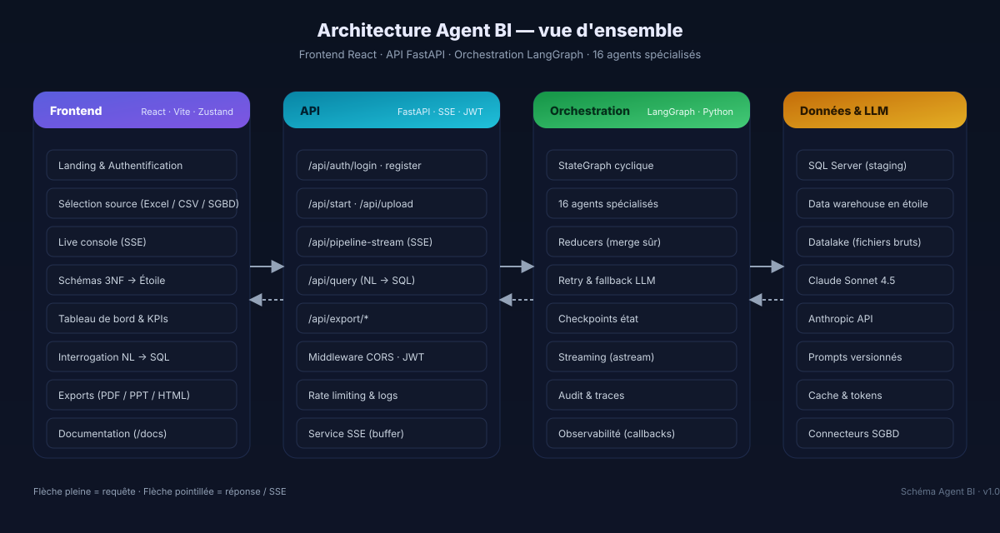
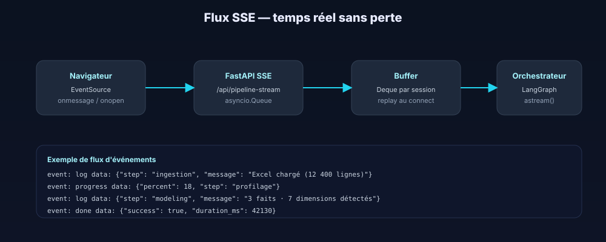
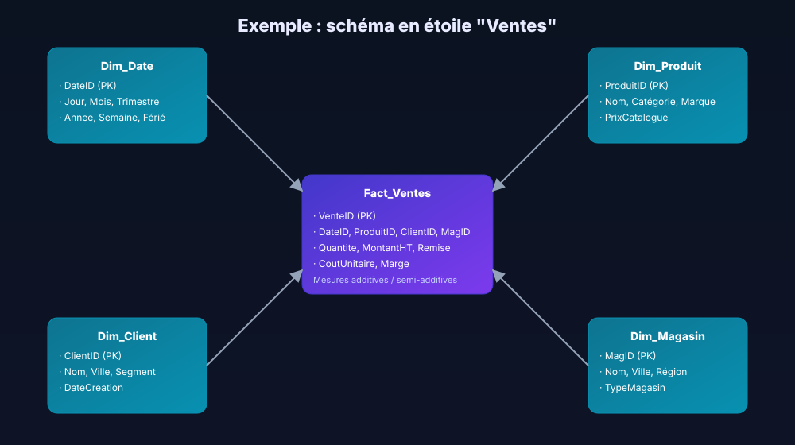

Architecture technique
Agent BI est construit autour d'une règle simple : une couche, un rôle, un contrat. Comprendre ces contrats permet de modifier n'importe quelle pièce sans casser le reste.

Vue macroscopique
De haut en bas : le front React propose une UX guidée qui ne sait rien du métier ; l'API FastAPI expose des endpoints REST et SSE ; l'orchestrateur LangGraph coordonne les 16 agents spécialisés ; la couche données abstrait la persistance (SQL Server, datalake, cache) ; enfin la couche LLM isole la communication avec Claude.
Frontend : React + Zustand
L'application Vite/React utilise Zustand comme store global (et non Redux) pour deux raisons : une API minimale (quelques lignes par slice) et des sélecteurs sans boilerplate. Le store pipelineStore.js expose trois domaines : session (JWT, utilisateur), pipeline (id de run, étapes, progression) et stream (logs SSE rolling-buffered).
La navigation repose sur un état appView (landing, auth, dashboard). L'auth gate dans App.jsx garantit que l'entrée dans dashboard exige un token valide ; toute expiration ramène automatiquement l'utilisateur à la landing.
Streaming live
Le front ouvre une connexion EventSource sur /api/pipeline-stream?session=…. Nous attendons explicitement onopen avant d'émettre /api/start, ce qui supprime la race condition qui faisait disparaître les premiers logs. Une promise de readiness est injectée dans le store puis résolue à l'ouverture du canal.

API : FastAPI + SSE
FastAPI combine trois atouts : annotations Pydantic pour la validation, async natif pour les I/O, et dépendances injectables (JWT, DB, SSE). Le fichier api/routes/pipeline.py expose les routes publiques :
# Endpoints principaux
POST /api/start # démarre un pipeline (BackgroundTasks)
GET /api/pipeline-stream # flux SSE (buffer + live)
POST /api/query # langage naturel → SQL + résultats
POST /api/upload # dépôt de fichier Excel/CSV
POST /api/export/{format} # pdf | pptx | html | xlsx
POST /api/auth/login # JWT
POST /api/auth/register # création de compteLe service sse.py implémente une file asyncio par session, plus un tampon circulaire (deque de 500 messages) qui conserve les premiers événements si le client n'est pas encore connecté. À la connexion du client, on draine le tampon puis on entre dans la boucle live.
task.add_done_callback(_observe) : toute exception est capturée et renvoyée au front sous forme d'événement error. Plus de silence en production.Orchestration : LangGraph
LangGraph permet de construire des StateGraphs cycliques : à la différence d'un pipeline linéaire, un agent peut re-déclencher un prédécesseur (par ex. l'Auditeur renvoie au Nettoyeur si la qualité n'est pas au rendez-vous). L'état global est un TypedDict partagé ; les mises à jour passent par des reducers pour éviter les conflits de merge.
state: dict = {
"dataset": DataFrame,
"profile": ProfileReport,
"schema_3nf": List[Table],
"schema_star": StarSchema,
"loads": List[LoadResult],
"kpis": List[KPI],
"issues": List[Issue],
"metadata": PipelineMeta,
}Le streaming s'active via wf.astream(state, stream_mode="updates") : à chaque transition, l'orchestrateur pousse un événement SSE (étape, progression, message). Les pannes partielles sont gérées par des retry policies et un fallback vers un plan dégradé prédéfini.
Données & LLM
Côté persistance, trois zones coexistent : le staging (tables brutes 3NF), le warehouse (schéma en étoile), le datalake (fichiers bruts conservés pour l'auditabilité). Côté LLM, un wrapper anthropic_client.py centralise les appels à Claude Sonnet 4.5 avec cache de prompts et limite de tokens.

Patrons transverses
- Idempotence. Chaque agent peut être rejoué sans effet de bord grâce à des clés déterministes (hash de l'entrée + version de prompt).
- Observabilité. Logs structurés, corrélés par
session_id, exportés vers SSE et, en option, vers un collecteur externe. - Backpressure. Les files asyncio sont bornées ; un agent trop rapide ne peut pas inonder la UI.
- Dégradé contrôlé. Un plan de secours permet de livrer une étoile canonique si Claude échoue ou coûte trop.
Déploiement de référence
Le docker-compose.yml fourni démontre une topologie à deux services (api, web) derrière un reverse proxy Nginx. Un ajout trivial permet d'intercaler un load balancer en amont et plusieurs instances API en aval — les sessions SSE s'épinglent via ip_hash.